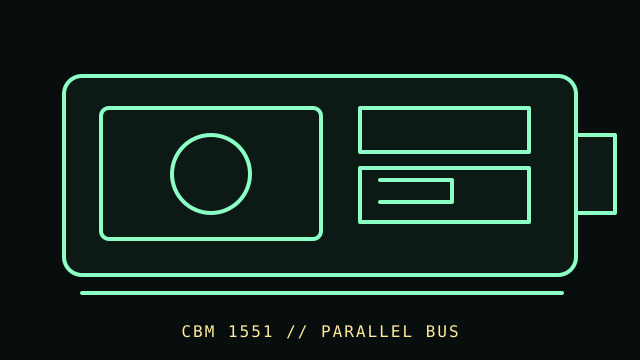

[ FLOPPY DRIVES // IDENTIFIED MODEL ]
Commodore 1551 Disk Drive
The Commodore 1551 is an external 5.25-inch disk drive made for the Commodore 16/Plus/4 family. Its host connection is not the same as Commodore IEC drives such as the 1541.

MODEL IDENTIFICATION: Commodore 1551; record enclosure label, cable/connector, controller-board revision, and any adapter in use. This record keeps variant-dependent claims qualified; verify the physical unit and applicable manual before connecting, servicing, or formatting media.
Recorded specifications
| Catalog model | Commodore 1551 Disk Drive |
|---|---|
| Device type | External 5.25-inch drive with integrated controller |
| Interface / connector | Commodore Plus/4-family parallel expansion-bus interface via the 1551 cable; not IEC serial and not PC 34-pin. |
| Media / formats | 5.25-inch Commodore-format disks. Supported geometry and software depend on the 1551/host combination; capacity claims are not generalized here. |
| Revision caution | Match full model code, board/ROM/firmware revision, connector, cable, and documentation edition. Family-level ratings and host claims do not automatically apply to every unit. |
Host-controller and format compatibility
- Intended for Commodore 16/Plus/4 systems; verify exact host port and cable before connection. The 1551 is not a standard IEC drive and not a PC floppy drive.
- Software must support the 1551’s interface/controller behavior; do not assume 1541 compatibility solely because disk media is the same diameter.
- Adapters and later hardware modifications may alter electrical and software compatibility; document them and check the original manual.
Preservation and safe cleaning
Power down and disconnect host and drive before service. Keep damaged or contaminated media out of the mechanism. Use the 1551 manual/service documentation for cleaning; avoid head contact, aggressive abrasion, and solvents on magnetic media.
For a disk acquisition, record the physical media label and condition, drive/model/revision, controller, host, software/firmware, settings, and any errors. Keep original media and raw captures/images unchanged; checksum verified copies and document conversions as derivatives.
Primary manuals & standards/archive references
- Commodore 1551 Disk Drive Users Guide — Zimmers.net archivePeriod manufacturer user guide for the 1551 and Plus/4-class connection.
- Commodore 1551 Disk Drive archive indexAdditional archived documentation; match manual revision to the device.
Source scope is stated per link. Prefer the matching manufacturer manual and revision over family summaries. Capacities and recording modes are omitted when not supported for the exact model and format.